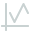

Machine Faults
(m/s²)

Live vibration data (X, Y, Z axes) from the Movement module. Anomaly detection flags deviations from the normal baseline.
X
Y
Z

Waiting for sensor data…
Machine Status
It quantifies how far the current vibration is from the model's 'normal' clusters.
Scores above your threshold are flagged as an anomaly. This value is an anomaly score, not a 0–1 confidence. Use the numeric input for values above the slider range.
Scores above your threshold are flagged as an anomaly. This value is an anomaly score, not a 0–1 confidence. Use the numeric input for values above the slider range.